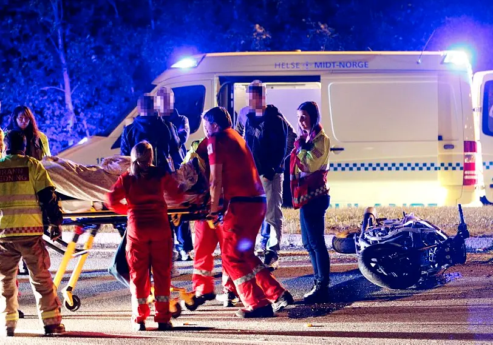

Bør aldersgrensen på lettsykkel økes?
I 2023 mistet 3 ungdommer livet, og 40 ble hard skadd i ulykker på lettsykkel. Det er en økning på 20% fra 2022.
Lett motorsykkel har blitt mer og mer vanlig hos ungdommen, men dessverre ser vi en økning i alvorlige ulykker. Foreldre må være oppmerksomme på de potensielle farene ved bruk av lett motorsykkel.

Urovekkende økning i antall ulykker
De siste 23 årene har det vært en økning på 58 prosent drepte og hardt skadde 16- og 17-åringer på lett MC.
Lettsykler er ofte sett på som en rimelig og praktisk måte for unge å komme seg rundt på, men risikoen for ulykker er betydelig høyere sammenlignet med andre kjøretøy. Det er viktig at både ungdom og foreldre er klar over disse risikoene og tar nødvendige forholdsregler. Mange blir hardt skadd, og disse skadene kan ha livslange konsekvenser for de unge menneskene som rammes.

180 ungdommer på 10 år
Statens vegvesens rapport viser at de fleste som blir drept eller alvorlig skadet på lett motorsykkel er i aldersgruppen 15-19 år. Mellom 2012 og 2021 har over 180 ungdommer i denne aldersgruppen blitt drept eller hardt skadet
Forbyggende tiltak
Noen eksperter mener at økt opplæring og strengere regler kan bidra til å redusere antall ulykker. Andre foreslår at aldersgrensen for å kjøre lettsykkel bør heves for å beskytte unge førere. Det er også forslag om å innføre hyppigere kontroller for å sikre at kjøretøyene er i god stand. Videre kan bedre infrastruktur og sikrere veier bidra til å redusere risikoen for ulykker. Samarbeid mellom skoler, foreldre og myndigheter er essensielt for å fremme tryggere kjørevaner blant ungdom.